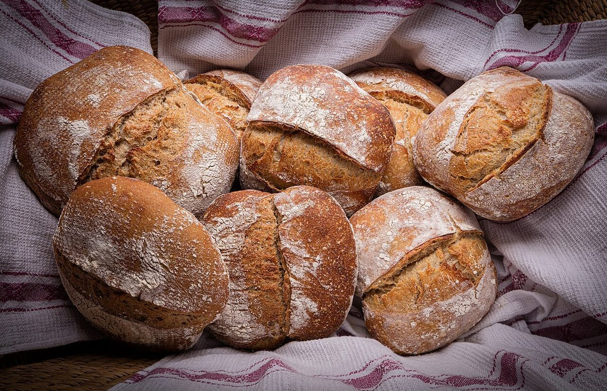

口コミ
こんな声があるかもしれない
ベーグル店という業種から自然に想像できる声を、制作側が創作したものです。
以下は制作側が考えた創作のイメージ例で、実在のお客様の投稿ではありません。実際の口コミ・評価とは関係ありません。
「えっと、どれにしよう」と迷っている間も、急かされずに選べそうな気がします。ゆっくり選ぶ時間も楽しみになりそうなお店です。
ふだんの朝ごはんを、ちょっとだけ楽しくしてくれそうなお店だと思います。ひとりでも立ち寄りやすい雰囲気を期待しています。
手みやげを選ぶとき、あれこれ悩むのも含めて嬉しい時間になりそうです。また寄りたくなるお店になりそうだと感じます。

